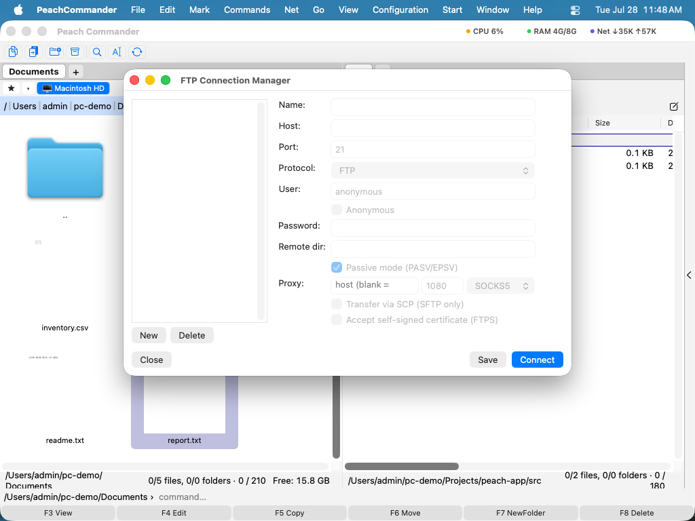

连接到 FTP 与 SFTP
Peach Commander 可以像浏览普通文件夹一样浏览远程服务器。连接后，一个面板显示远程文件，你可以用与本地相同的按键来复制、移动、重命名和删除它们。它支持普通 FTP、安全 FTPS，以及基于 SSH 的 SFTP/SCP，因此你可以访问从传统虚拟主机到加固 SSH 服务器的各种目标。已保存的连接存放在连接管理器中，密码被安全地保存在你的 macOS 钥匙串中，而非连接本身。
连接到服务器
- 打开 网络 菜单并选择 FTP 连接…（Ctrl+F）以打开连接管理器。
- 从列表中选取一个已保存的连接并单击 连接，或单击 新建 来创建一个。使用列表中的文件夹对连接进行分组。
- 若需要快速的一次性连接，选择 网络 > FTP 新建连接…（Ctrl+N）并直接输入地址。
- 出现提示时输入你的密码；勾选保存它的选项，它就会进入你的钥匙串以备下次使用。
- 完成后，选择 网络 > FTP 断开连接（Ctrl+Shift+F）。

（图：连接管理器保存你的服务器；使用“新建”、“编辑”和“删除”来管理它们。）在设置连接时，你可以选择协议（FTP、使用显式 AUTH TLS 的 FTPS、990 端口上的隐式 FTPS，或 SFTP/SCP）、被动或主动模式、远程和本地的起始文件夹、文本编码，以及一个可选的保活间隔，以防止空闲服务器把你断开。对于 SFTP，你可以用你的 SSH 代理、密码或私钥文件进行认证，也可以选择 SCP 进行传输。未知的 SSH 主机密钥在首次使用时被信任；如果某个已知服务器的密钥发生更改，连接会被拒绝，以保护你免受篡改。
FTP 控制台
若要确切了解服务器在说什么，请从 网络 菜单打开 FTP 控制台。它显示控制通道的实时日志（你的密码会被掩盖），并让你向服务器输入原始 FTP 命令。
 （图：FTP 控制台记录每一次交互并接受原始命令，这在排查故障时很方便。）
（图：FTP 控制台记录每一次交互并接受原始命令，这在排查故障时很方便。）
快捷键
| 操作 | 快捷键 |
|---|---|
| 打开连接管理器 | Ctrl+F |
| 新建连接 | Ctrl+N |
| 断开连接 | Ctrl+Shift+F |
| 更改传输模式 | Ctrl+Shift+M |
说明
- 中断的下载会从停止处继续：如果文件已部分存在且服务器接受续传，只传输缺少的尾部。若服务器拒绝，则直接重新下载整个文件。上传同样可以续传：当服务器上的文件比要发送的文件更短时。
- 对于使用自签名证书的 FTPS 服务器，请在该连接的设置中打开接受不受信任证书的选项。
- 对于普通 FTP，可以为每个连接设置 SOCKS5 代理。不支持将加密的 FTPS 连接经由代理路由。
- 可以导入来自 Total Commander 的现有 FTP 连接。
- SCP 仅用于传输文件；列出、重命名和删除始终通过 SFTP 进行。